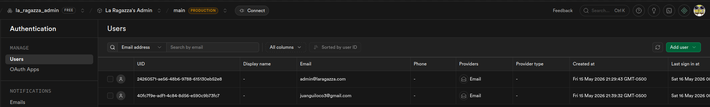
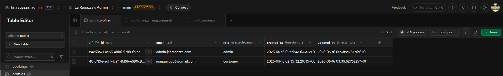

Documento integrado
Informe premium de auditoria y arquitectura
Este HTML integra el contenido completo de docs/security-audit-report.md y todos los diagramas ubicados en docs/diagrams/. Esta version esta preparada para lectura academica, revision empresarial y exportacion a PDF desde el navegador.
Diagrama 1
1
Arquitectura Cloud Desplegada
Separacion entre Vercel, Render y Supabase Cloud con flujos de JWT, Query Builder y RLS.
Archivo fuente embebido: docs/diagrams/security-cloud-architecture.html
Diagrama 2
2
Arquitectura Local de Desarrollo
Ambiente local con Astro, proxy Vite, Express y Supabase remoto.
Archivo fuente embebido: docs/diagrams/security-local-architecture.html
Diagrama 3
3
Flujo Seguro Admin/API/RLS
Secuencia completa desde login hasta render seguro en el panel administrativo.
Archivo fuente embebido: docs/diagrams/admin-security-flow.html
Diagrama 4
4
Matriz CIA y Controles
Mapa ejecutivo de activos, controles, riesgos residuales y cadena de defensa.
Archivo fuente embebido: docs/diagrams/cia-security-matrix.html
Informe de Auditoria de Seguridad
Proyecto: La Ragazza Web Fecha del informe: 2026-05-23 Alcance: sitio Astro, panel administrativo, API Parcial Express, Supabase Auth y Supabase/Postgres.
1. Resumen ejecutivo
Este informe documenta dos controles de seguridad obligatorios para la rubrica:
- Proteccion de credenciales: la aplicacion no almacena Contraseñas en tablas propias. El login, signup, sesiones y almacenamiento de hashes de Contraseña son gestionados por Supabase Auth.
- Prevencion de inyeccion SQL: el backend no construye SQL crudo con datos del usuario. La capa de repositorios usa el Supabase Query Builder, que actua como equivalente practico de sentencias preparadas en esta arquitectura.
Tambien se incluye:
- analisis de arquitectura cloud y local;
- matriz CIA;
- analisis de riesgos;
- evidencias de codigo;
- guia para capturas de pantalla;
- manual de migracion;
- referencias a diagramas HTML separados.
Diagramas complementarios:
docs/diagrams/security-cloud-architecture.htmldocs/diagrams/security-local-architecture.htmldocs/diagrams/admin-security-flow.htmldocs/diagrams/cia-security-matrix.html
2. Alcance tecnico del sistema
2.1 Componentes principales
| Componente | Tecnologia | Responsabilidad |
|---|---|---|
| Sitio publico | Astro | Renderizar paginas estaticas bilingues para usuarios finales. |
| Panel admin | Astro + JS publico en public/admin | Permitir login, gestion de reservas y solicitudes de cambio de rol. |
| Autenticacion | Supabase Auth | Crear usuarios, autenticar credenciales, emitir JWT y manejar sesiones. |
| API Parcial | Express | Validar JWT, aplicar reglas de negocio y consultar Supabase/Postgres. |
| Base de datos | Supabase/Postgres | Persistir perfiles, reservas y solicitudes con RLS. |
| Hosting frontend | Vercel | Servir sitio estatico y panel admin. |
| Hosting API | Render u otro host Node | Ejecutar Express API. |
2.2 Flujo cloud desplegado
- El usuario abre el panel admin desde Vercel.
- El navegador carga el cliente Supabase publico con la
anon/publishable key. - El usuario inicia sesion desde el formulario del admin.
- Supabase Auth valida email y Contraseña.
- Supabase Auth devuelve una sesion y un
access_token. - El admin llama a la API Parcial con
Authorization: Bearer <access_token>. - La API valida el token con Supabase.
- La API crea un cliente Supabase server-side con el JWT del usuario.
- Los servicios validan el payload.
- Los repositorios consultan con Supabase Query Builder.
- Supabase/Postgres aplica RLS.
- La API devuelve JSON al admin.
2.3 Flujo local de desarrollo
- Astro corre en
localhost:4321. - Express API corre en
localhost:3001. astro.config.mjsproxya/apihaciahttp://localhost:3001.- El admin local usa Supabase Auth real o el proyecto Supabase configurado en
.env. - El flujo de JWT y RLS es el mismo que en cloud.
3. Proteccion de Contraseñas
3.1 Decision de arquitectura
La aplicacion no implementa almacenamiento propio de Contraseñas. No existe una tabla de aplicacion como:
users.passwordprofiles.passwordadmin_users.passwordpassword_hash
La tabla profiles solo extiende la identidad del usuario con informacion de dominio, por ejemplo:
idemailrole
La Contraseña no forma parte del modelo de datos de la aplicacion.
3.2 Donde se autentica el usuario
El formulario de login/signup del admin usa Supabase Auth desde el navegador. La evidencia esta en:
public/scripts/admin/auth.js
Fragmento relevante:
const { error } = await supabase.auth.signUp({
email: String(payload.email ?? "").trim(),
password: String(payload.password ?? "")
});const { error } = await supabase.auth.signInWithPassword({
email: String(payload.email ?? "").trim(),
password: String(payload.password ?? "")
});Interpretacion:
- El frontend envia las credenciales a Supabase Auth.
- La API Parcial no recibe Contraseñas.
- La API Parcial no guarda Contraseñas.
- La base de datos de aplicacion no guarda Contraseñas.
- Supabase Auth gestiona internamente los hashes y el ciclo de vida de credenciales.
3.3 Donde se valida la sesion en el backend
La API no valida email/Contraseña. Solo valida tokens ya emitidos por Supabase Auth.
Archivo:
parcial/api/src/lib/supabase.mjs
Fragmento:
export function getBearerToken(request) {
const header = request.headers.authorization ?? "";
if (!header.toLowerCase().startsWith("bearer ")) return "";
return header.slice(7).trim();
}export async function resolveRequestAuth(request) {
const accessToken = getBearerToken(request);
if (!accessToken) {
throw new HttpError(401, "Sesion requerida.");
}
const supabase = createServerSupabaseClient(accessToken);
const { data: userData, error: userError } = await supabase.auth.getUser(accessToken);
if (userError || !userData.user) {
throw new HttpError(401, "Sesion requerida.");
}
}Interpretacion:
- El backend solo acepta
Bearer token. - El token se valida contra Supabase Auth.
- Si el token no existe o no es valido, la API responde
401. - La API nunca compara Contraseñas.
3.4 Captura de pantalla solicitada: Contraseñas cifradas en BD
La rubrica solicita: "Captura de pantalla de las Contraseñas cifradas en la BD."
En este proyecto se debe presentar de esta forma:
- Abrir Supabase Dashboard.
- Ir al proyecto usado por la aplicacion.
- Entrar a Authentication.
- Abrir la seccion de usuarios.
- Mostrar que los usuarios son administrados por Supabase Auth.
- Si se usa SQL Editor con permisos adecuados, consultar la tabla interna
auth.users. - Evidenciar que la Contraseña no aparece en texto plano y que Supabase maneja un campo interno de hash/encrypted password.
Consulta de evidencia sugerida para Supabase SQL Editor:
select
id,
email,
encrypted_password,
created_at,
last_sign_in_at
from auth.users
limit 5;Nota importante: esta tabla pertenece al esquema interno
auth, no a las tablas de aplicacion. La captura debe ocultar o difuminar valores sensibles completos. Para la sustentacion basta mostrar que existe un valor cifrado/hasheado y que no hay Contraseñas en texto plano.
3.5 Captura alternativa aceptable
Si Supabase no permite visualizar encrypted_password por permisos del dashboard, se recomienda incluir dos capturas:
- Pantalla de Authentication > Users en Supabase, mostrando que los usuarios viven en Supabase Auth.
- Pantalla del schema o tabla
public.profiles, mostrando que solo guardaid,emailyrole, nopassword.
Conclusion para la rubrica:
La aplicacion no almacena Contraseñas en su propia base de datos. Las credenciales son delegadas a Supabase Auth, que administra internamente el hash de Contraseña en el esquema
auth. La aplicacion solo consume JWTs emitidos por Supabase y guarda datos de perfil/rol enpublic.profiles.
4. Prueba de sentencias preparadas
4.1 Aclaracion tecnica
El requisito habla de "sentencias preparadas". En esta arquitectura no se usa un driver SQL directo como pg, PDO o mysqli. El backend usa Supabase JS SDK.
Por eso, la equivalencia tecnica es:
| Requisito tradicional | Implementacion en este proyecto |
|---|---|
| Sentencia preparada | Supabase Query Builder |
| Parametros separados del SQL | Valores pasados como argumentos/objetos a .eq(), .insert(), .update() |
| No concatenar SQL | No existe SQL crudo construido con input |
| Control de permisos | RLS en Supabase/Postgres |
La razon de seguridad es la misma: la entrada del usuario no se concatena en un string SQL ejecutable.
4.2 Capa donde se implementa
Las consultas equivalentes a preparadas se implementan en la capa de repositorios:
parcial/api/src/repositories/bookingRepository.mjsparcial/api/src/repositories/roleRequestRepository.mjs
La capa de servicios valida datos, pero no consulta directamente la base. La capa de rutas recibe HTTP, pero tampoco construye SQL. La responsabilidad de acceso a datos vive en repositorios.
4.3 Evidencia en bookingRepository.mjs
4.3.1 Insert seguro de reservas
Archivo:
parcial/api/src/repositories/bookingRepository.mjs
Lineas relevantes:
- 35 a 49
Codigo:
async create(supabase, { userId, nombreCliente, bookingTime, numeroPersonas, comentarios, status }) {
const data = await runQuery(
supabase
.from("bookings")
.insert({
user_id: userId,
client_name: nombreCliente,
booking_time: bookingTime,
party_size: numeroPersonas,
comments: comentarios,
status
})
.select(BOOKING_SELECT)
.single()
);
return mapBooking(data);
}Por que es seguro:
nombreCliente,comentarios,bookingTimey demas valores entran como propiedades de un objeto.- No existe una cadena
INSERT INTO ... VALUES ('${nombreCliente}'). - Supabase/PostgREST recibe estructura y valores por separado.
- Antes de llegar aqui,
bookingServicevalida formato, longitud y markup HTML.
4.3.2 Select seguro por usuario
Lineas relevantes:
- 54 a 59
Codigo:
async listByUserId(supabase, userId) {
const data = await runQuery(
supabase.from("bookings").select(BOOKING_SELECT).eq("user_id", userId).order("booking_time", {
ascending: true
})
);
return data.map(mapBooking);
}Por que es seguro:
userIdse pasa como argumento de.eq("user_id", userId).- No se concatena en un
WHERE user_id = '${userId}'. - La consulta tambien se ejecuta bajo el contexto del JWT del usuario, por lo que RLS limita el acceso.
4.3.3 Select seguro por ID
Lineas relevantes:
- 74 a 76
Codigo:
async findById(supabase, id) {
const data = await runQuery(supabase.from("bookings").select(BOOKING_SELECT).eq("id", id).maybeSingle());
return mapBooking(data);
}Por que es seguro:
idse pasa como valor parametrizado del query builder.- No existe concatenacion SQL.
maybeSingle()limita la expectativa de resultado a cero o un registro.
4.3.4 Update seguro de reservas
Lineas relevantes:
- 79 a 87
Codigo:
async update(supabase, id, payload) {
const data = await runQuery(
supabase
.from("bookings")
.update(payload)
.eq("id", id)
.select(BOOKING_SELECT)
.single()
);
return mapBooking(data);
}Por que es seguro:
payloades un objeto validado previamente por el servicio.identra por.eq("id", id).- No se arma
UPDATE bookings SET ... WHERE id = ...manualmente.
4.3.5 Delete seguro de reservas
Lineas relevantes:
- 96 a 99
Codigo:
async remove(supabase, id) {
const { error } = await supabase.from("bookings").delete().eq("id", id);
if (error) throw error;
}Por que es seguro:
- El filtro de borrado usa
.eq("id", id). - No se concatena el ID dentro de SQL textual.
4.4 Evidencia en roleRequestRepository.mjs
4.4.1 Insert seguro de solicitudes
Lineas relevantes:
- 40 a 47
Codigo:
async create(supabase, { userId, requestedRole, justification }) {
const data = await runQuery(
supabase
.from("role_change_requests")
.insert({ user_id: userId, requested_role: requestedRole, justification, status: "active" })
.select(REQUEST_SELECT)
.single()
);
const requesterEmail = await this.findRequesterEmail(supabase, data.user_id);
return mapRequest(data, requesterEmail);
}Por que es seguro:
justificationpuede venir del usuario, pero viaja como valor de objeto.requestedRoleya fue validado contra un conjunto permitido.- No existe SQL crudo con interpolacion.
4.4.2 Select seguro con .in()
Lineas relevantes:
- 29 a 36
Codigo:
const userIds = [...new Set(requests.map((request) => request.user_id))];
const profiles = await runQuery(supabase.from("profiles").select("id,email").in("id", userIds));Por que es seguro:
- La lista
userIdsse pasa como arreglo a.in("id", userIds). - No se construye un
IN (${ids.join(",")})manual. - Supabase maneja la parametrizacion del filtro.
4.4.3 Select seguro por usuario
Lineas relevantes:
- 61 a 66
Codigo:
async listByUser(supabase, userId) {
const data = await runQuery(
supabase.from("role_change_requests").select(REQUEST_SELECT).eq("user_id", userId).order("created_at", {
ascending: false
})
);
return enrichWithRequesterEmails(supabase, data);
}Por que es seguro:
userIdentra por.eq().- No se interpola dentro de un string SQL.
4.4.4 Update seguro de solicitud
Lineas relevantes:
- 79 a 87
Codigo:
async update(supabase, id, { requestedRole, justification }) {
const data = await runQuery(
supabase
.from("role_change_requests")
.update({ requested_role: requestedRole, justification })
.eq("id", id)
.select(REQUEST_SELECT)
.single()
);
const requesterEmail = await this.findRequesterEmail(supabase, data.user_id);
return mapRequest(data, requesterEmail);
}Por que es seguro:
requestedRoleyjustificationse envian como objeto.idse envia por.eq().- La capa de servicio ya rechazo roles invalidos, textos demasiado largos y markup HTML.
4.4.5 Update seguro de estado
Lineas relevantes:
- 93 a 101
Codigo:
async updateStatus(supabase, id, status) {
const data = await runQuery(
supabase
.from("role_change_requests")
.update({ status })
.eq("id", id)
.select(REQUEST_SELECT)
.single()
);
}Por que es seguro:
statusviene de un conjunto permitido.idse filtra por.eq().- No se concatena SQL.
4.4.6 Update seguro de roles con service client
Lineas relevantes:
- 107 a 136
Codigo resumido:
const { data, error } = await supabase
.from("profiles")
.update({ role })
.eq("id", userId)
.select("id,role")
.maybeSingle();Y fallback:
const service = createServiceSupabaseClient();
const { data: svcData, error: svcError } = await service
.from("profiles")
.update({ role })
.eq("id", userId)
.select("id,role")
.maybeSingle();Por que es seguro:
- Incluso en operacion privilegiada se usa Query Builder.
- No hay SQL crudo.
- El
service role keysolo se usa server-side y en un flujo auditado. - El rol aprobado viene de solicitudes validadas y de un conjunto permitido.
4.5 Capa previa de validacion
La seguridad de consultas se complementa con validacion de dominio.
Reservas
Archivo:
parcial/api/src/services/bookingService.mjs
Lineas relevantes:
- 7 a 18: normalizacion.
- 21 a 50: validacion.
- 72 a 80: creacion tras validar.
- 83 a 107: actualizacion tras validar.
Controles:
- campos obligatorios;
- numero de personas entero y mayor a cero;
- comentarios maximo 800 caracteres;
- nombre maximo 120 caracteres;
- fecha/hora validas;
- reserva no puede estar en el pasado;
- rechazo de
<y>en campos libres.
Solicitudes de rol
Archivo:
parcial/api/src/services/roleRequestService.mjs
Lineas relevantes:
- 21 a 43: validacion de payload.
- 59 a 66: creacion tras validar.
- 69 a 79: actualizacion tras validar.
Controles:
- rol solicitado obligatorio;
- justificacion obligatoria;
- justificacion minimo 12 y maximo 1200 caracteres;
- rol solicitado solo puede ser
customer,staffoadmin; - rechazo de
<y>en justificacion.
5. Matriz CIA
| Activo | Confidencialidad | Integridad | Disponibilidad | Controles implementados |
|---|---|---|---|---|
| Contraseñas de usuarios | Alta | Alta | Media | Delegadas a Supabase Auth; no se guardan en tablas propias; Supabase almacena hashes internos. |
| JWT de sesion | Alta | Alta | Media | Enviado como Bearer token; validado con supabase.auth.getUser; no se almacena en backend. |
Perfiles (profiles) | Media | Alta | Media | RLS, validacion de token, acceso por Supabase client contextual. |
Reservas (bookings) | Media | Alta | Alta | RLS, validacion de servicio, Query Builder, controles de rol. |
| Solicitudes de rol | Media | Alta | Media | RLS, validacion de rol, estados permitidos, Query Builder. |
| Service role key | Critica | Critica | Media | Solo server-side; nunca en frontend; usada en flujo auditado de aprobacion de rol. |
| Panel admin | Media | Alta | Alta | Supabase Auth, validacion de sesion, escape HTML, CORS controlado. |
| API Parcial | Media | Alta | Alta | Helmet, CORS, requireAuth, HttpError, validacion, tests. |
Lectura de la matriz
- Confidencialidad: se protege principalmente con Supabase Auth, JWT, RLS y no exposicion del service key.
- Integridad: se protege con validacion de servicios, Query Builder, reglas de rol y RLS.
- Disponibilidad: depende de Vercel, Render y Supabase; el diseno separa frontend estatico y API para reducir acoplamiento.
6. Analisis de riesgos
| Riesgo | Probabilidad | Impacto | Estado | Mitigacion |
|---|---|---|---|---|
| Robo de Contraseñas desde tabla propia | Baja | Critico | Mitigado | No hay tabla propia de Contraseñas; Supabase Auth gestiona hashes. |
SQL injection en filtros id/user_id | Baja | Alto | Mitigado | .eq(), .in(), .insert(), .update() con Query Builder. |
| SQL injection en comentarios/justificaciones | Baja | Alto | Mitigado | Valores viajan como objeto; servicio valida longitud y markup. |
| XSS almacenado en comentarios | Baja | Alto | Mitigado | Backend rechaza </>; frontend aplica escapeHtml(). |
| XSS reflejado en mensajes de error | Baja | Medio | Mitigado | Mensajes se muestran con textContent. |
| Exposicion de service role key | Media | Critico | Control operativo | Debe existir solo en Render/API, nunca en Vercel/frontend. |
| CORS bloqueando API o permitiendo origen indebido | Media | Medio | Mitigado parcialmente | Middleware CORS permite origenes conocidos; revisar CORS_ALLOWED_ORIGINS al migrar. |
| Usuario sin perfil tras signup | Media | Medio | Requiere operacion | Trigger handle_new_user() o provisionamiento manual de profiles. |
7. Manual de migracion detallado
7.1 Variables de entorno
Frontend Vercel:
SUPABASE_URL=https://<project>.supabase.co
SUPABASE_ANON_KEY=<publishable-or-anon-key>
PUBLIC_API_BASE_URL=https://<api-host>API Render/local:
NODE_ENV=production
PORT=3001
SUPABASE_URL=https://<project>.supabase.co
SUPABASE_ANON_KEY=<publishable-or-anon-key>
SUPABASE_SERVICE_ROLE_KEY=<service-role-key>
PUBLIC_SITE_URL=https://<frontend-host>
CORS_ALLOWED_ORIGINS=https://<frontend-host>Regla critica:
SUPABASE_SERVICE_ROLE_KEYnunca debe existir en el frontend.SUPABASE_ANON_KEYosb_publishable_...si puede estar en el navegador; no es una private key.
7.2 Migracion local
- Instalar dependencias:
pnpm install- Configurar
.envlocal con Supabase URL y anon key. - Ejecutar API y frontend:
pnpm dev- Abrir:
http://localhost:4321/admin- Probar login con Supabase Auth.
- Probar reservas y solicitudes.
- Ejecutar pruebas:
pnpm parcial:test
pnpm build7.3 Migracion cloud
- Crear o verificar proyecto Supabase.
- Configurar Auth con email/password.
- Crear tablas publicas necesarias:
- profiles - bookings - role_change_requests
- Habilitar RLS.
- Crear politicas de acceso.
- Configurar trigger de perfil si aplica.
- Desplegar API en Render.
- Configurar variables de entorno de API.
- Desplegar frontend en Vercel.
- Configurar
PUBLIC_API_BASE_URLapuntando a Render. - Configurar
CORS_ALLOWED_ORIGINSen API para permitir el dominio Vercel. - Probar preflight CORS desde navegador.
- Probar login y CRUD.
- Ejecutar smoke tests si el entorno lo permite.
7.4 Checklist post-migracion
| Verificacion | Resultado esperado |
|---|---|
| Login admin | Supabase emite sesion. |
| API sin token | Responde 401. |
| API con token valido | Responde datos permitidos por RLS. |
| Preflight CORS | OPTIONS responde 204 para origen permitido. |
Payload <script> en reserva | API responde 400. |
Payload <script> en solicitud | API responde 400. |
profiles | No contiene columna password. |
auth.users | Contiene hash interno gestionado por Supabase. |
| Service key | Solo en API host. |
8. Evidencias anexadas y encontradas en el repo del proyecto
8.1 Capturas
Las dos capturas de Supabase Auth ya estan incorporadas aqui.


- Codigo
public/scripts/admin/auth.jsusandosignInWithPassword. - Codigo
bookingRepository.mjsusando.insert(),.eq(),.update(). - Codigo
roleRequestRepository.mjsusando.insert(),.eq(),.in(),.update().
8.2 Comandos de evidencia
Buscar SQL crudo:
rg -n "query\\(|execute\\(|raw\\(|sql`|SELECT|INSERT|UPDATE|DELETE" parcial/api/srcEjecutar pruebas:
pnpm parcial:testConstruir el sitio:
pnpm build9. Conclusion
El proyecto cumple el objetivo de la rubrica desde la logica de seguridad:
- Las Contraseñas no se almacenan en tablas propias; se delegan a Supabase Auth.
- La API no implementa comparacion de Contraseñas; solo valida JWTs.
- Las consultas a la base no se escriben como SQL interpolado; se hacen con Supabase Query Builder.
- Los valores del usuario se pasan como parametros/objetos a
.insert(),.update(),.eq()e.in(). - La validacion de servicios reduce datos invalidos antes de persistir.
- RLS limita el acceso a filas segun identidad.
- La arquitectura cloud separa frontend estatico, API y proveedor de identidad/base de datos, lo que permite controles por capa.